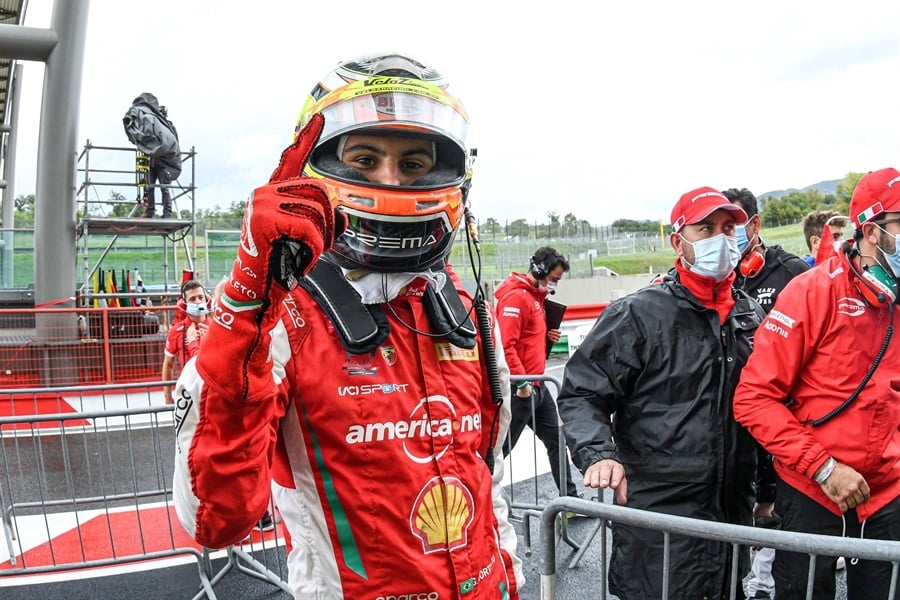
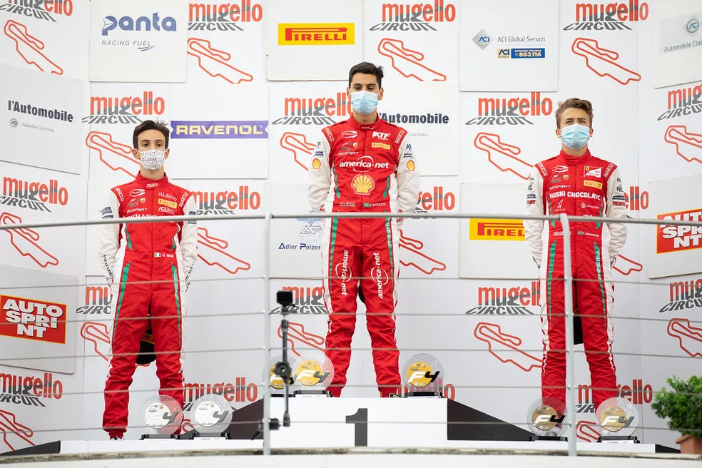

🏎️ Gabriel Bortoleto na Fórmula 4
Após uma carreira vitoriosa no kartismo internacional, Gabriel Bortoleto deu um passo fundamental rumo aos monopostos ao ingressar na Fórmula 4. Ele estreou oficialmente na F4 Italiana (Italian F4 Championship), uma das mais disputadas e respeitadas categorias de base do automobilismo mundial. O campeonato é conhecido por revelar talentos promissores e por servir de ponte entre o kart e as categorias internacionais da FIA.
Estreia na F4 Italiana (2020)
Bortoleto competiu na temporada de 2020 pela renomada equipe Prema Powerteam, uma das mais tradicionais da Europa e conhecida por formar grandes nomes do automobilismo, como Charles Leclerc, Mick Schumacher e Oscar Piastri. Essa parceria foi fundamental para que Gabriel pudesse mostrar todo o seu potencial.
📈 Resultados de Destaque
Durante sua temporada na F4, Gabriel obteve resultados expressivos:
- 5º colocado no campeonato geral da F4 Italiana
- Diversos pódios, com destaque para corridas em Mugello, Imola e Red Bull Ring
- Conquista de pole positions e voltas rápidas
- Reconhecimento pela mídia especializada como uma das grandes revelações da temporada
Além disso, ele competiu em eventos da F4 ADAC Alemã, ganhando ainda mais quilometragem e experiência com diferentes circuitos e condições.
🚀 Preparação para categorias maiores
A passagem de Gabriel pela Fórmula 4 foi marcada não apenas por bons resultados, mas também por um forte desenvolvimento técnico e mental. Durante esse período, ele:
- Aprendeu a trabalhar com engenheiros em ajustes finos de acerto de carro
- Desenvolveu domínio sobre o gerenciamento de pneus
- Evoluiu na leitura de corrida e na adaptação a diferentes traçados europeus
Essa base sólida pavimentou o caminho para sua progressão à Fórmula Regional Europeia e, posteriormente, à Fórmula 3, onde conquistaria o título de campeão em 2023.
🏁 Legado na F4
Gabriel Bortoleto deixou a Fórmula 4 com o reconhecimento de ser um dos brasileiros mais promissores de sua geração. Sua habilidade de adaptação rápida e maturidade nas pistas chamaram atenção de olheiros e abriram as portas para projetos ainda maiores no automobilismo mundial.